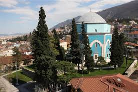
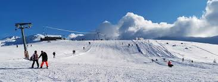

Hızlı Bilgiler
| Bölge | Marmara |
|---|---|
| Nüfus | 3.238.618 (2024) |
| Yüzölçümü | 10.882 km² |
| Rakım | 155 m |
| İlçe Sayısı | 17 |
| Plaka | 16 |
Yeşil Bursa — Osmanlı'nın ilk başkenti, Uludağ'ın eteklerinde bir tarih ve doğa şehri
Resimlere tıklayarak detaylı bilgi sayfasına gidebilirsiniz

20 kubbeli, 14. yüzyıldan kalma Osmanlı eseri

Çelebi Sultan Mehmed'in türbesi (1421)

Türkiye'nin en önemli kayak merkezi (2543 m)

700 yıllık Osmanlı köyü — UNESCO Dünya Mirası
Genel bilgiler ve istatistikler
Bursa, Marmara Bölgesi'nin Güney Marmara Bölümü'nde yer alan, Türkiye'nin en büyük dördüncü şehridir. Osmanlı Devleti'nin ilk başkenti olma özelliğini taşır ve bu sebeple tarihi ve kültürel açıdan Türkiye'nin en zengin şehirlerinden biridir.
Şehir; çınar ağaçları, ipeği, kaplıcaları, havlusu, gazozu ve şeftalisi ile bilinir. Marmara Bölgesi'nin önemli sanayi merkezlerinden biri olan Bursa, özellikle otomotiv ve tekstil sektörlerinde Türkiye'nin lokomotifidir. Aynı zamanda Uludağ sayesinde kış turizminin de merkezidir.
"Yeşil Bursa" olarak da anılan şehir, doğal güzellikleri ve tarihi yapılarıyla her yıl milyonlarca yerli ve yabancı turist çeker. Cumalıkızık Köyü ve birçok Osmanlı eseri UNESCO Dünya Mirası Listesi'nde yer almaktadır.
| Bölge | Marmara |
|---|---|
| Nüfus | 3.238.618 (2024) |
| Yüzölçümü | 10.882 km² |
| Rakım | 155 m |
| İlçe Sayısı | 17 |
| Plaka | 16 |
Bursa'ya gidersen mutlaka uğramalısın
14. yüzyıldan kalma, 20 kubbesi ve devasa hat sanatıyla ünlü Osmanlı eseri.
2543 metre yüksekliğiyle Türkiye'nin en önemli kayak merkezi ve Milli Parkı.
700 yıllık tarihi Osmanlı köyü, UNESCO Dünya Mirası Listesi'nde.
Çelebi Sultan Mehmed'in türbesi, çiniyle kaplı muhteşem iç tasarımı.
İpek Yolu'nun son durağı, 500 yıllık tarihi çarşı.
Doğal sıcak su kaplıcaları — Roma döneminden beri kullanılıyor.